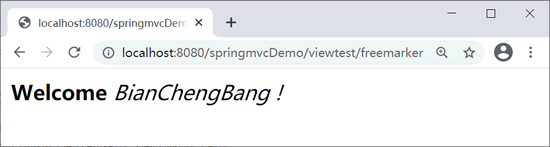

首页 > 编程笔记
Spring MVC视图解析器（ViewResolver）
视图解析器（ViewResolver）是 Spring MVC 的重要组成部分，负责将逻辑视图名解析为具体的视图对象。
Spring MVC 提供了很多视图解析类，其中每一项都对应 Java Web 应用中特定的某些视图技术。下面介绍一些常用的视图解析类。
UrlBasedViewResolver 通过 prefix 属性指定前缀，suffix 属性指定后缀。当 ModelAndView 对象返回具体的 View 名称时，它会将前缀 prefix 和后缀 suffix 与具体的视图名称拼接，得到一个视图资源文件的具体加载路径，从而加载真正的视图文件并反馈给用户。
使用 UrlBasedViewResolver 除了要配置前缀和后缀属性之外，还需要配置“viewClass”，表示解析成哪种视图。示例代码如下。
上述 viewClass 值为 InternalResourceViewResolver，它用来展示 JSP 页面。如果需要使用 jstl 标签展示数据，将 viewClass 属性值指定为 JstlView 即可。
另外，存放在 /WEB-INF/ 目录下的内容不能直接通过 request 请求得到，所以为了安全性考虑，通常把 jsp 文件放在 WEB-INF 目录下。
InternalResourceViewResolver 能自动将返回的视图名称解析为 InternalResourceView 类型的对象。InternalResourceView 会把 Controller 处理器方法返回的模型属性都存放到对应的 request 属性中，然后通过 RequestDispatcher 在服务器端把请求 forword 重定向到目标 URL。也就是说，使用 InternalResourceViewResolver 视图解析时，无需再单独指定 viewClass 属性。示例代码如下。
FreeMarkerViewResolver 最终会解析逻辑视图配置，返回 freemarker 模板。不需要指定 viewClass 属性。
FreeMarkerViewResolver 配置如下。
然后定义一个 Controller，让其返回 ModelAndView，同时定义一些返回参数和视图信息。
在 /WEB-INF/ftl 文件夹下创建 fm_freemarker.ftl，代码如下。
Spring MVC 提供了很多视图解析类，其中每一项都对应 Java Web 应用中特定的某些视图技术。下面介绍一些常用的视图解析类。
URLBasedViewResolver
UrlBasedViewResolver 是对 ViewResolver 的一种简单实现，主要提供了一种拼接 URL 的方式来解析视图。UrlBasedViewResolver 通过 prefix 属性指定前缀，suffix 属性指定后缀。当 ModelAndView 对象返回具体的 View 名称时，它会将前缀 prefix 和后缀 suffix 与具体的视图名称拼接，得到一个视图资源文件的具体加载路径，从而加载真正的视图文件并反馈给用户。
使用 UrlBasedViewResolver 除了要配置前缀和后缀属性之外，还需要配置“viewClass”，表示解析成哪种视图。示例代码如下。
<bean id="viewResolver" class="org.springframework.web.servlet.view.UrlBasedViewResolver">
<property name="viewClass" value="org.springframework.web.servlet.view.InternalResourceViewResolver"/> <!--不能省略-->
<!--前缀-->
<property name="prefix" value="/WEB-INF/jsp/"/>
<!--后缀-->
<property name="suffix" value=".jsp"/>
</bean>
上述视图解析器配置了前缀和后缀两个属性，这样缩短了 view 路径。因此《第一个Spring MVC应用》一节中的 RegisterController 和 LoginController 控制器类的视图路径仅需提供 register 和 login，视图解析器将会自动添加前缀和后缀，此处解析为 /WEB-INF/jsp/register.jsp 和 /WEB-INF/jsp/login.jsp。上述 viewClass 值为 InternalResourceViewResolver，它用来展示 JSP 页面。如果需要使用 jstl 标签展示数据，将 viewClass 属性值指定为 JstlView 即可。
另外，存放在 /WEB-INF/ 目录下的内容不能直接通过 request 请求得到，所以为了安全性考虑，通常把 jsp 文件放在 WEB-INF 目录下。
InternalResourceViewResolver
InternalResourceViewResolver 为“内部资源视图解析器”，是日常开发中最常用的视图解析器类型。它是 URLBasedViewResolver 的子类，拥有 URLBasedViewResolver 的一切特性。InternalResourceViewResolver 能自动将返回的视图名称解析为 InternalResourceView 类型的对象。InternalResourceView 会把 Controller 处理器方法返回的模型属性都存放到对应的 request 属性中，然后通过 RequestDispatcher 在服务器端把请求 forword 重定向到目标 URL。也就是说，使用 InternalResourceViewResolver 视图解析时，无需再单独指定 viewClass 属性。示例代码如下。
<bean id="viewResolver" class="org.springframework.web.servlet.view.InternalResourceViewResolver">
<property name="viewClass" value="org.springframework.web.servlet.view.InternalResourceViewResolver"/> <!--可以省略-->
<!--前缀-->
<property name="prefix" value="/WEB-INF/jsp/"/>
<!--后缀-->
<property name="suffix" value=".jsp"/>
</bean>
FreeMarkerViewResolver
FreeMarkerViewResolver 是 UrlBasedViewResolver 的子类，可以通过 prefix 属性指定前缀，通过 suffix 属性指定后缀。FreeMarkerViewResolver 最终会解析逻辑视图配置，返回 freemarker 模板。不需要指定 viewClass 属性。
FreeMarkerViewResolver 配置如下。
<bean class="org.springframework.web.servlet.view.freemarker.FreeMarkerViewResolver">
<property name="prefix" value="fm_"/>
<property name="suffix" value=".ftl"/>
</bean>
下面指定 FreeMarkerView 类型最终生成的实体视图（模板文件）的路径以及其他配置。需要给 FreeMarkerViewResolver 设置一个 FreeMarkerConfig 的 bean 对象来定义 FreeMarker 的配置信息，代码如下。
<bean class="org.springframework.web.servlet.view.freemarker.FreeMarkerConfigurer">
<property name="templateLoaderPath" value="/WEB-INF/ftl" />
</bean>
定义了 templateLoaderPath 属性后，Spring 可以通过该属性找到 FreeMarker 模板文件的具体位置。当有模板位于不同的路径时，可以配置 templateLoaderPath 属性，来指定多个资源路径。然后定义一个 Controller，让其返回 ModelAndView，同时定义一些返回参数和视图信息。
@Controller
@RequestMapping("viewtest")
public class ViewController {
@RequestMapping("freemarker")
public ModelAndView freemarker() {
ModelAndView mv = new ModelAndView();
mv.addObject("username", "BianChengBang");
mv.setViewName("freemarker");
return mv;
}
}
当 FreeMarkerViewResolver 解析逻辑视图信息时，会生成一个 URL 为“前缀+视图名+后缀”（这里即“fm_freemarker.ftl”）的 FreeMarkerView 对象，然后通过 FreeMarkerConfigurer 的配置找到 templateLoaderPath 对应文本文件的路径，在该路径下找到该文本文件，从而 FreeMarkerView 就可以利用该模板文件进行视图的渲染，并将 model 数据封装到即将要显示的页面上，最终展示给用户。在 /WEB-INF/ftl 文件夹下创建 fm_freemarker.ftl，代码如下。
<html>
<head>
<title>FreeMarker</title>
</head>
<body>
<b>Welcome!</b>
<i>${username }</i>
</body>
</html>
最终返回给用户的视图如下所示。

fm_freemarker.ftl页面
关注公众号「站长严长生」，在手机上阅读所有教程，随时随地都能学习。内含一款搜索神器，免费下载全网书籍和视频。

微信扫码关注公众号